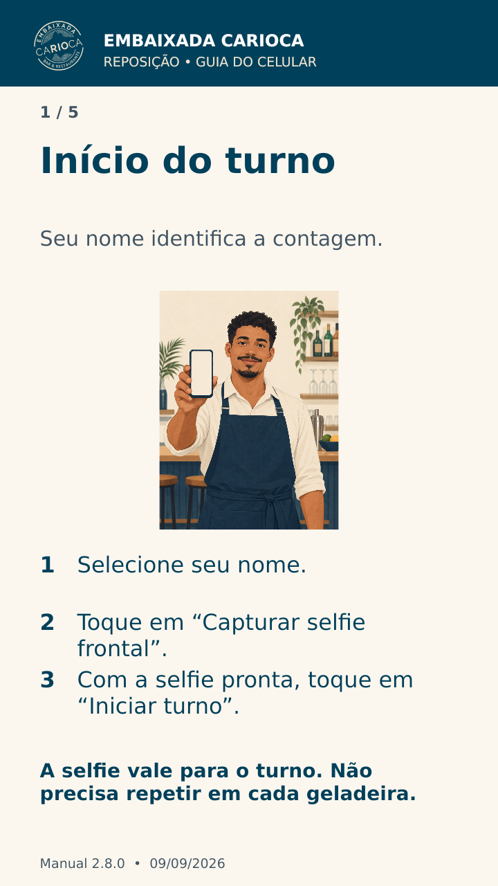
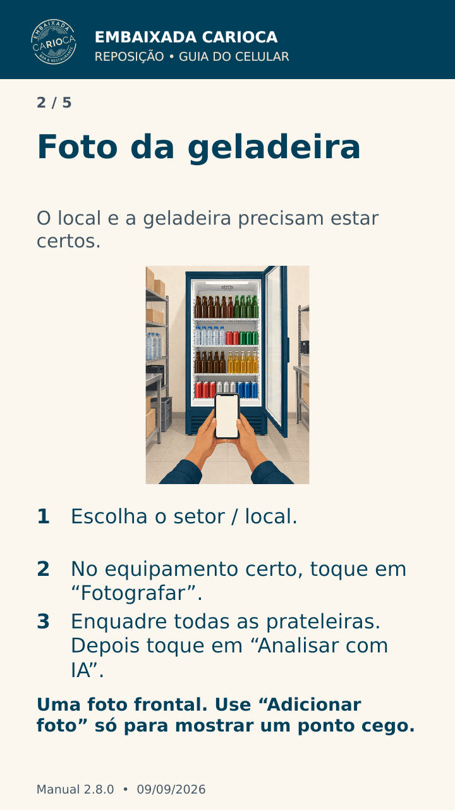
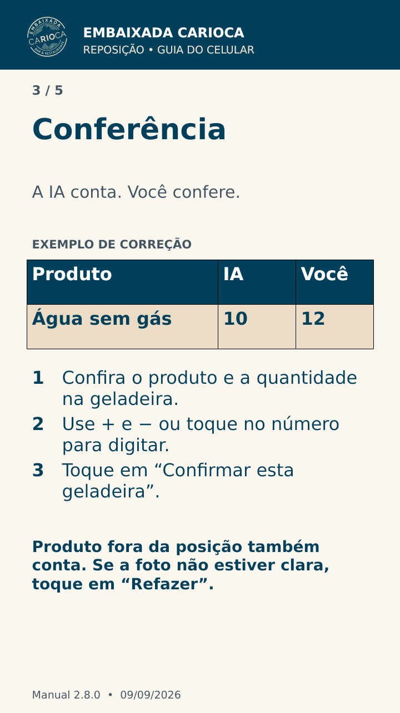
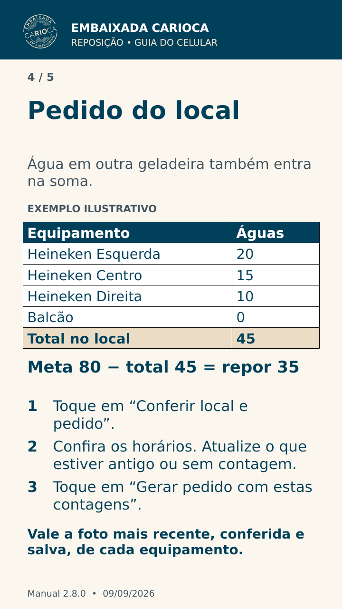
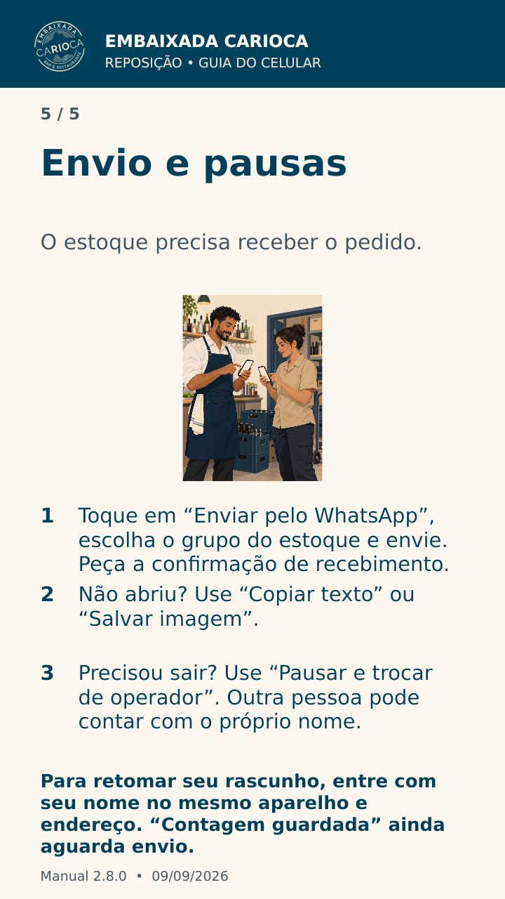

Ler passo 1 em texto
Início do turno
Seu nome identifica a contagem.
- Selecione seu nome.
- Toque em “Capturar selfie frontal”.
- Com a selfie pronta, toque em “Iniciar turno”.
A selfie vale para o turno. Não precisa repetir em cada geladeira.

Ler passo 2 em texto
Foto da geladeira
O local e a geladeira precisam estar certos.
- Escolha o setor / local.
- No equipamento certo, toque em “Fotografar”.
- Enquadre todas as prateleiras. Depois toque em “Analisar com IA”.
Uma foto frontal. Use “Adicionar foto” só para mostrar um ponto cego.

Ler passo 3 em texto
Conferência
A IA conta. Você confere.
| Produto | IA | Você |
| Água sem gás | 10 | 12 |
- Confira o produto e a quantidade na geladeira.
- Use + e − ou toque no número para digitar.
- Toque em “Confirmar esta geladeira”.
Produto fora da posição também conta. Se a foto não estiver clara, toque em “Refazer”.

Ler passo 4 em texto
Pedido do local
Água em outra geladeira também entra na soma.
| Equipamento | Águas |
| Heineken Esquerda | 20 |
| Heineken Centro | 15 |
| Heineken Direita | 10 |
| Balcão | 0 |
| Total no local | 45 |
Meta 80 − total 45 = repor 35
- Toque em “Conferir local e pedido”.
- Confira os horários. Atualize o que estiver antigo ou sem contagem.
- Toque em “Gerar pedido com estas contagens”.
Vale a foto mais recente, conferida e salva, de cada equipamento.

Ler passo 5 em texto
Envio e pausas
O estoque precisa receber o pedido.
- Toque em “Enviar pelo WhatsApp”, escolha o grupo do estoque e envie. Peça a confirmação de recebimento.
- Não abriu? Use “Copiar texto” ou “Salvar imagem”.
- Precisou sair? Use “Pausar e trocar de operador”. Outra pessoa pode contar com o próprio nome.
Para retomar seu rascunho, entre com seu nome no mesmo aparelho e endereço. “Contagem guardada” ainda aguarda envio.